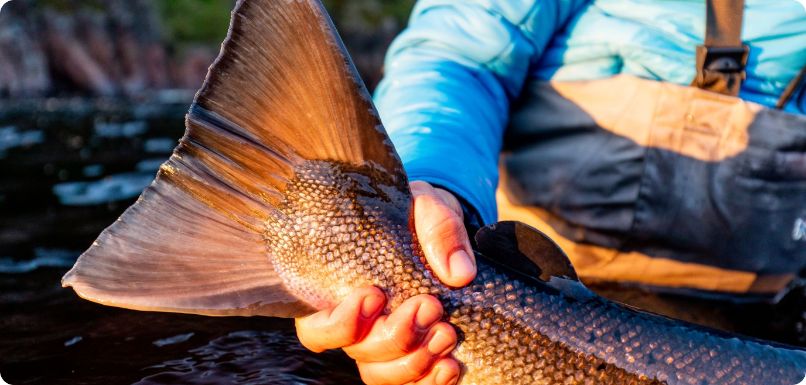
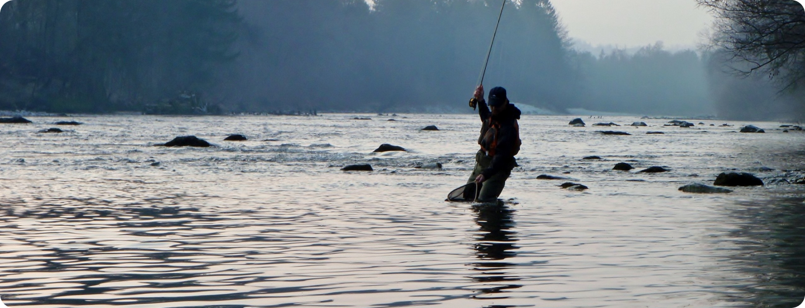
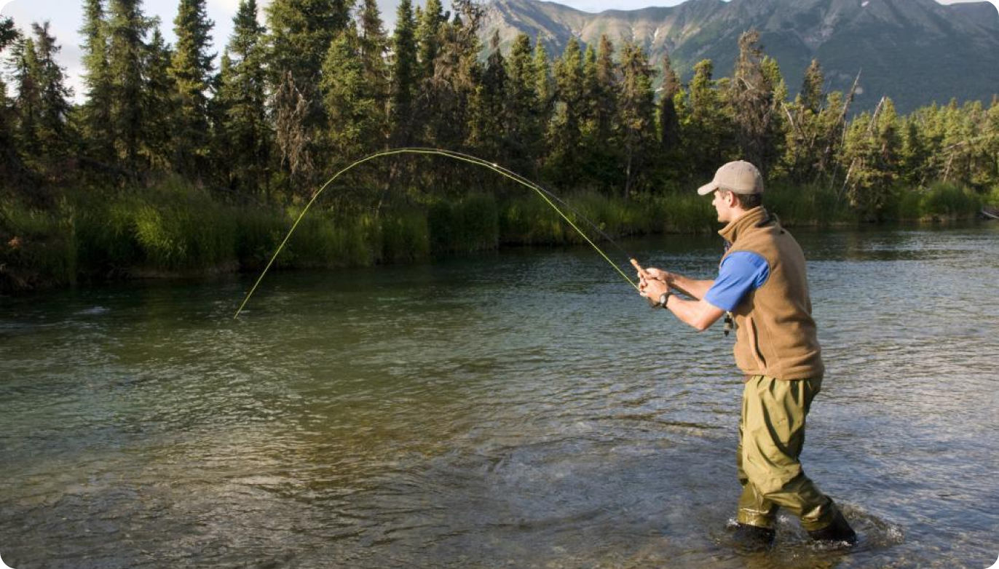

12-19 sept 2019
group size
fish count
biggest fish caught, lbs
04
145
22
A week that set me on a very enjoyable career path!
With just 3 weeks to the actual trip departure date on 7 August, entrance into Russia by any foreign nationals was pushed back from the planned date of 15 July with a review rumoured for 1 August. The ASR let those of us on the trip know and gratuitously once again offered to roll over our trip to next year should we feel unable to come. Obstinately or determinedly I, and as it happens 3 other Scotsmen, held firm! Miraculously, (if you are an incredibly eager and passionate fisherman suffering from lockdown anxiety), the United Kingdom and 2 other countries were given the OK to travel to Russia. COVID clear certificates were required to be presented on arrival, taken within 72 hrs and of course, Russian visas obtained, always a point of concern due to the lengthy forms and implications of an undetected spelling mistake. (Personally, I have always found the Russian visa staff helpful and obliging at both the Edinburgh and London office). COVID clear we were set to travel!! We were due to be the first international anglers to fish at the ASR this year and I would hazard a bet the first to do so across the Kola in 2020. We may not have been pioneers in the original sense but we were certainly breaking new ground. With just 3 weeks to the actual trip departure date on 7 August, entrance into Russia by any foreign nationals was pushed back from the planned date.
The ASR let those of us on the trip know and gratuitously once again offered to roll over our trip to next year should we feel unable to come. Obstinately or determinedly I, and as it happens 3 other Scotsmen, held firm! Miraculously, (if you are an incredibly eager and passionate fisherman suffering from lockdown anxiety), the United Kingdom and 2 other countries were given the OK to travel to Russia. COVID clear certificates were required to be presented on arrival, taken within 72 hrs and of course, Russian visas obtained, always a point of concern due to the lengthy forms and implications of an undetected spelling mistake. (Personally, I have always found the Russian visa staff helpful and obliging at both the Edinburgh and London office). COVID clear we were set to travel!! We were due to be the first international anglers to fish at the ASR this year and I would hazard a bet the first to do so across the Kola in 2020. We may not have been pioneers in the original sense but we were certainly breaking new ground. With just 3 weeks to the actual trip departure date on 7 August, entrance into Russia by any foreign nationals was pushed back from the planned
The regular and convenient scheduled charter flight from Helsinki was not operating so we travelled via Moscow, a slightly less convenient journey but by no means complicated. My only word of warning is to avoid at all costs the taxi drivers at Moscow airport. You will probably be required to change terminal. They will show you an ‘official’ rate card offering to provide this service for $100 when there is an infinitely more effective internal and free shuttle train, even though we were adamantly informed that it was not operating due to COVID! I had been bitten 18 years ago and was not going to be fooled again!
Once we had assembled in Kola, we were given an additional Covid test to make absolutely sure that we were clear and consequently everyone at the camp would remain safe. To bring COVID to the camp would clearly be a disaster and so this extra precaution was welcomed, even if it added a final apprehensive hurdle to the travel equation. If any of us had tested positive, then it would have resulted in a rather miserable journey home. This might have constituted an unacceptable risk for a great many, keen but cautious anglers. From my perspective, like much in life, it was just another calculated risk which I felt had been suitably minimized by the summer lockdown with consequent social distancing and sensible daily precautions.
Even after 18 years I retain that palpable sense of excitement when travelling out to the ASR, something I hope but equally I do not believe I will ever loose. Once again, a chance to potentially come into contact with some of the biggest Atlantic Salmon on the planet, in one of the most rugged and unspoiled locations in the world, on rivers that for me exemplify almost everything that I find exciting about not just salmon fishing but fishing in general! This year has been unusual in that the usual flow of reports had been missing alongside any international guests and with it the subsequent update on water conditions and weekly injection of anticipation. The rivers had of course been fished throughout the season by Russians but in lower numbers than on a regular year.